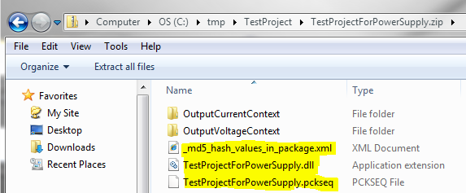

A package entity is an archived file that contains all the assemblies and data files needed to run an ActivATE project with ActivATE IDE, System Controller or Test Program Manager. Source code is never included in the package.
A package file name consists of the short name of the sequence file, with .package as extension. (Note: Although unusual, the short name of the sequence file might be different than the short name of the tpf file.)
The package file always gets created as sibling of the sequence file.
At any time, the content of a package file can be revealed by renaming the file to .zip, and expanding it with Microsoft Explorer or WinZip:

As seen in the picture above, at minimum, a package file must contains the following:
Other links:
Data Files In Project Package Creation Package Usage
Astronics Test Systems
Last updated on 2/27/16 I. Zolog